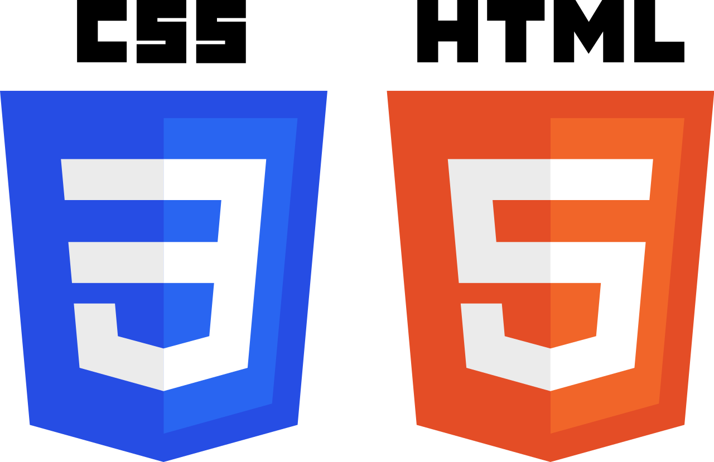

Quem sou eu
- Me chamo Allan Guilherme Zimmermann.
- Tenho 33 anos de idade.
- Sou de Blumenau/SC.
- Atuo na área de TI desde 2008.
Onde me achar
Onde me achar
Experiência
Trabalhei por 10 anos em uma empresa multinacional alemã, tendo como principal cliente uma montadora de veículos.
Atuei principalmente nas áreas de suporte, gestão e implantação de sistemas de alta disponibilidade.
Essas atividades me trouxeram bastante know-how de gestão de incidentes, problemas e mudanças assim como contato com pessoas de diferentes países e culturas.
No dia a dia, utilizava o SO AIX (baseado em Unix) e as atividades de suporte eram realizadas diretamente no terminal e no banco de dados (DB2).
Os fornecedores deste cliente utilizavam Windows Server e SQL Server, e as atividades nestes locais eram de DML no banco de dados, e criação de relatórios
Nunca atuei oficialmene como desenvolver, mas participei da criação de algumas aplicações de pequeno porte para o cliente.
Como trabalhavamos em escala e em turnos, foi necessário criar aplicações para gerenciar as atividades e manter uma base de dados para geração de KPIs e auditorias. Fui o responsável pela criação desssas aplicações web, então tive contato com PHP, HTML, Javascript e um pouco de Java.
Hoje
Ao sair da empresa tirei um tempo para me dedicar outros assuntos que não estavam diretamente ligados a área de TI. Estudei sobre economia, geopolítica e história, assuntos que acredito serem de grande importância para qualquer cidadão hoje em dia.
Comecei a atuar como investidor no mercado de capitais com intuito de rentabilizar meu capital e isso me trouxe a necessidade de automatizar alguns processos. Comecei a estudar Python, HTML5 e CSS3 e decidi fazer este site para colocar em prática estes conhecimentos.
O site
Foi desenvolvido pensando no conceito de mobile first e com o intuito de praticar conceitos e ao mesmo tempo poder centralizar minhas redes sociais e projetos. Ele foi pensado para ser simples e leve, principalmente para dispositivos móveis.
Como o intuito era aplicar conceitos de HTML5 e CSS3, sem frameworks ou bibliotecas, também tentei utilizar o mínimo possível de Javascript.
Todo código do site esta disponível no meu GitHub para consulta ou até mesmo para "copiar mas não fazer igual".
Projetos
Clique nas imagens para acessar os projetos.
O objetivo deste projeto foi criar uma aplicação web que simulasse uma biblioteca pessoal, onde eu poderia adicionar, editar ou remover os livros que possuo, estou lendo ou já li e manter tudo organizado. Toda aplicação foi feita em Python (inclusive a geração das telas) e os dados ficam armazenados em um banco de dados relacional.
Este projeto é uma evolução das minhas atividades como investidor, antes eu buscava apenas alguns dados e armazena tudo automaticamente em uma planilha do Google. Decidi deixar ele mais genérico e buscar os dados que a pessoa deseja e retornar um JSON para que ele possa fazer o que achar melhor com o dado.
Projetos
O objetivo deste projeto foi criar uma aplicação web que simulasse uma biblioteca pessoal, onde eu poderia adicionar, editar ou remover os livros que possuo, estou lendo ou já li e manter tudo organizado. Toda aplicação foi feita em Python (inclusive a geração das telas) e os dados ficam armazenados em um banco de dados relacional.
Este projeto é uma evolução das minhas atividades como investidor, antes eu buscava apenas alguns dados e armazena tudo automaticamente em uma planilha do Google. Decidi deixar ele mais genérico e buscar os dados que a pessoa deseja e retornar um JSON para que ele possa fazer o que achar melhor com o dado.
Metas
A escolha de me dedicar a aprender Python como lingaguem veio por eu acreditar que atualmente é uma das linguagens mais customizaveis para lidar com o volume gigantesco de dados precisamos lidar e dar sentido. Além de ser uma das linguagens de alto nível mais simples de ser escrita, o que ajuda muito em deixar o código organizado e legível
Com isso em mente, meus objetivos de curto/médio prazo é aprender mais sobre Ciência de Dados e Machine Learning, me aprofundando nas bibliotecas mais conhecidas para estes fins.